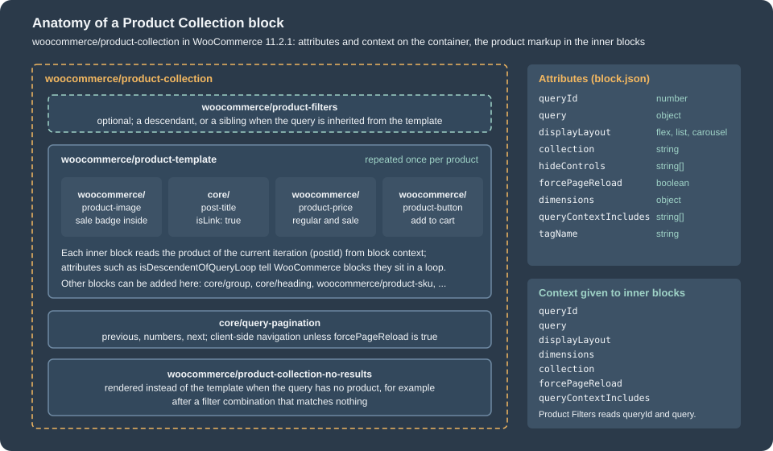
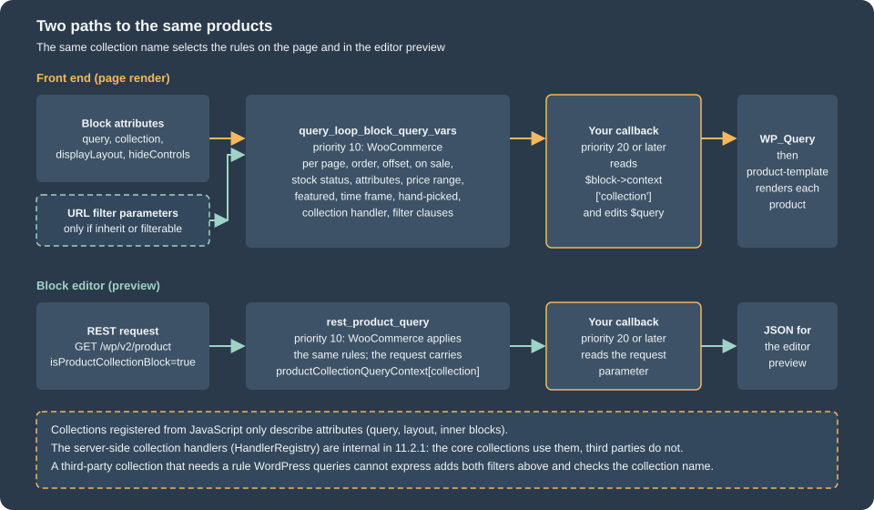
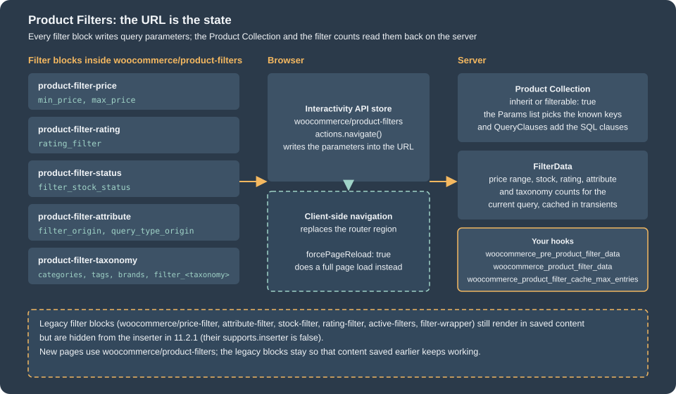

Product Collection and Blocks
|
This content was generated with the assistance of AI and should be verified against the official documentation before being relied on in production. |
This page was written against WordPress 7.1.3 and WooCommerce 11.2.1 (released on 2026-10-09) and checked on 2026-10-27. The
Product Collection block and the Product Filters blocks belong to WooCommerce core, so they exist on every self-hosted
store; they are block features, so they work in the templates of a block theme and in the pages and posts of a classic
theme. They are the way the block Shop, the category pages and the cross-sells of the Cart block list products. The classic shortcodes and widgets that the older books use ([products], the layered navigation
widgets) still exist in 11.2.1 and are covered at the end as legacy. Block development in WordPress, including the
Interactivity API that the Product Filters block is built on, is covered in
Block Development Environment and
Interactivity API.
The page goes from what a collection is, to the attributes and the query that a collection produces, to registering your own collection in JavaScript and PHP, and finally to the filter blocks that narrow a collection through the URL. It follows Themes: Block and Classic, which explains the templates that contain these blocks, and it is followed by Cart and Checkout Blocks, the other family of WooCommerce blocks. The running example is the Pocket Coffee shop: a Beans category and an Equipment category, an origin attribute (Ethiopia Yirgacheffe, Colombia Huila, Brazil Cerrado) and a custom collection called Coffee Club picks that shows the cheapest bean bags in stock to club members.
Everything below that runs was run against a local WordPress 7.1.3 and WooCommerce 11.2.1 store: pages were created with WP-CLI and fetched with curl, the registration scripts were executed against the real registry script of WooCommerce in a headless browser page, and the outputs shown are the ones observed. The block editor screens themselves (the collection chooser and the inspector controls) were not driven: opening them needs a signed-in administrator session, and this page documents what the code registers, not how the editor draws it.
Two generations of product blocks
Before the Product Collection block there were two other ways to list products with blocks, and a store that is a few years old usually has pages that use them.
-
Specialised grid blocks (the first generation of WooCommerce blocks): Hand-picked Products, Best Selling Products, Newest Products, On Sale Products, Top Rated Products, Products by Category, Products by Tag, Products by Attribute and All Products. Each one was its own block with its own attributes and its own server-side renderer.
-
Products (Beta), the
woocommerce/product-queryblock: a variation of the core Query Loop block that added product filters to the core block. It was the bridge towards the Product Collection block.
The Product Collection block (woocommerce/product-collection) replaced both. It is one block whose collection decides the
starting query, layout and inner blocks, and whose editor controls and server query are shared by every collection. The
dates that matter for a migration, from the WooCommerce changelog, are:
| Version | Change |
|---|---|
8.6.0 (2024-02-13) |
The |
9.1.0 (2024-07-10) |
The product archive templates use Product Collection instead of Products (Beta), and Products (Beta) is hidden from the inserter. |
9.3.0 (2024-09-10) |
The code that upgraded Products (Beta) blocks to Product Collection automatically was removed. |
9.7.0 (2025-02-24) |
A custom collection can pass extra attributes such as |
10.1.0 (2025-08-12) |
The "Products by Category" and "Products by Tag" collections were added. |
10.2.0 (2025-09-17) |
The carousel layout was added, and the Cart block started to use a Product Collection for cross-sells. |
10.3.0 (2025-10-22) |
A single-column layout is allowed. |
10.4.0 (2025-12-10) |
The "Cart Contents" collection was added (used by the block email editor). |
10.6.0 (2026-03-10) |
The "Products by Brand" collection was added. |
11.0.0 (2026-08-04) |
Products (Beta) was renamed Products (Deprecated). |
In WooCommerce 11.2.1 the older blocks are still registered, so content saved with them keeps rendering, but they are
hidden from the inserter. This listing is the output of a short wp eval-file script that reads the block registry:
product-collection title=Product Collection | inserter='default(true)'
all-products title=All Products | inserter=false
handpicked-products title=Hand-picked Products | inserter=false
product-best-sellers title=Best Selling Products | inserter=false
product-new title=Newest Products | inserter=false
product-on-sale title=On Sale Products | inserter=false
product-top-rated title=Top Rated Products | inserter=false
products-by-attribute title=Products by Attribute | inserter=false
product-category title=Products by Category | inserter=false
product-tag title=Products by Tag | inserter=false
attribute-filter title=Filter by Attribute Controls | inserter=false
price-filter title=Filter by Price Controls | inserter=false
stock-filter title=Filter by Stock Controls | inserter=false
rating-filter title=Filter by Rating Controls | inserter=false
active-filters title=Active Filters Controls | inserter=false
filter-wrapper title=Filter Block | inserter=false
product-filters title=Product Filters | inserter=trueThe script is WP_Block_Type_Registry::get_instance()->get_registered( 'woocommerce/<name>' ) for each name and prints
$type->supports['inserter']; the columns for parent, ancestor and deprecations were left out of the listing above. featured-product and featured-category are not in the list because they are still
inserted normally; they are single-item showcase blocks, not lists.
Anatomy of the Product Collection block

The block is a container. All the products come from the query that the container describes, and every inner block
renders one piece of one product, taking the product of the current iteration from block context. The block is dynamic:
what is stored in the post content is only the block comments with their JSON attributes and a wrapper; WooCommerce
runs the query and renders the markup on every request. This is the saved content of the Cart page of a fresh store,
which shows a Product Collection in use as the cross-sells list (the output of wp post get 6 --field=post_content parsed
with parse_blocks, reduced to the block names and the attributes of the collection):
woocommerce/product-collection {"queryId":0,"query":{"perPage":3,"pages":1,"offset":0,"postType":"product","order":"asc",
"orderBy":"title","search":"","exclude":[],"inherit":false,"taxQuery":[],"isProductCollectionBlock":true,"featured":false,
"woocommerceOnSale":false,"woocommerceStockStatus":["instock","outofstock","onbackorder"],"woocommerceAttributes":[],
"woocommerceHandPickedProducts":[],"filterable":false,"relatedBy":{"categories":true,"tags":true}},"tagName":"div",
"displayLayout":{"type":"flex","columns":3,"shrinkColumns":true},"dimensions":{"widthType":"fill"},
"collection":"woocommerce/product-collection/cross-sells","hideControls":["filterable"],"queryContextIncludes":["collection"]}
core/heading
woocommerce/product-template
woocommerce/product-image {"showSaleBadge":false,"imageSizing":"thumbnail","isDescendentOfQueryLoop":true}
woocommerce/product-sale-badge {"align":"right"}
core/post-title {"isLink":true, ... ,"__woocommerceNamespace":"woocommerce/product-collection/product-title"}
woocommerce/product-price {"isDescendentOfQueryLoop":true,"textAlign":"center","fontSize":"small"}
woocommerce/product-button {"isDescendentOfQueryLoop":true,"textAlign":"center","fontSize":"small"}The post title inside the loop is the core core/post-title block with the namespace attribute
__woocommerceNamespace; WooCommerce uses the namespace to recognise it and to add the Interactivity API directive that
raises the wc-blocks_viewed_product event described at the end of the page.
Block attributes
These are the attributes of the block in 11.2.1, read from its block.json:
| Attribute | Type | Meaning |
|---|---|---|
|
number |
Identifier of the loop on the page. Pagination, random ordering and the filter blocks use it to tell two collections apart. |
|
object |
The query description; every key is in the next table. |
|
string |
The HTML element of the wrapper, |
|
object |
|
|
object |
|
|
string |
The name of the collection the block started from, for example |
|
string[] |
Which filter controls the inspector must not show; see below. |
|
string[] |
Which extra context values the query uses; the core collections write |
|
boolean |
When true, pagination and filters reload the page instead of using the client-side router. Default false. |
|
boolean |
Marks a block that was converted from Products (Beta). |
The official registration page lists grid and stack as the values of displayLayout.type, which disagrees with the code. They are the names of the options in the editor source
(LayoutOptions.GRID and LayoutOptions.STACK), but the stored values are flex and list: the enum in block.json is
flex, list, carousel, and the saved content shown above says "type":"flex". Use the stored values in markup and in
registrations; the registration function does not check the value, so a wrong one is accepted silently and renders as the
default layout.
The query object
The query attribute is a plain object. These are the keys that the registration function validates, with the type each
one must have, plus the keys that WooCommerce itself writes into saved content:
| Key | Type | Meaning |
|---|---|---|
|
number |
Products per page. |
|
number |
Maximum number of pages (saved as 0 in the markup of the shop template). |
|
number |
Products skipped at the start. |
|
|
Direction. |
|
string |
A WordPress |
|
string |
Keyword. |
|
object |
Taxonomy term IDs by taxonomy, for example |
|
boolean |
Only featured products. |
|
object |
|
|
boolean |
Only products on sale. |
|
string[] |
Allowed stock statuses: |
|
object[] |
Attribute terms, for example |
|
number[] |
Product IDs. |
|
object |
|
|
boolean |
Use the query of the template (the main query) instead of this description. |
|
boolean |
Let the Product Filters blocks and the URL parameters narrow this query. |
|
boolean |
Always true; it is how the server recognises the block inside the generic query loop hooks. |
|
object |
|
|
Core Query Loop keys that the block keeps for compatibility. |
inherit and filterable are the two switches that decide where the products come from. With inherit set, the block
uses the products of the page it is on: the Shop page, a category, a tag, an attribute archive or a search result. The block
Product Catalog template of 11.2.1 does exactly that (its Product Collection has "inherit":true). With filterable set on
a query that is not inherited, the block still describes its own products but also honours the filter parameters of the URL.
With neither, a URL parameter is ignored, which is what the Cart cross-sells want.
Hiding controls
hideControls takes the names of inspector filters that a collection does not want the merchant to change, because
changing them would make the collection something else (a "New Arrivals" collection that the merchant re-orders by price
is no longer New Arrivals). The names are order, attributes, created, featured, hand-picked, keyword, on-sale,
stock-status, taxonomy and price-range; the registry also writes inherit, which the collections never offer, and the
Cart cross-sells write filterable. The list hides controls in the editor only: the saved query still applies, and a
merchant who edits the markup can change anything.
The core collections
A collection is a block variation of woocommerce/product-collection: a name, a title, a set of default attributes and a
set of inner blocks. The editor shows the collections in a chooser when a Product Collection is inserted and in the
inserter. These are the fourteen collection names that the 11.2.1 editor bundle registers:
Name (after woocommerce/product-collection/) |
What it selects | Notes |
|---|---|---|
|
All products in the catalog; its description says the results can match the current template, page or search term. |
Registered with an empty scope, so it is not offered in the chooser or the inserter. |
|
Products marked as featured. |
Hides the Featured control. |
|
Ordered by popularity (sales), descending, five items. |
Hides the order control. |
|
Ordered by date, newest first, five items. |
Hides the order control. |
|
Products on sale. |
Hides the On Sale control. |
|
Ordered by rating, descending. |
Hides the order control. |
|
Product IDs chosen in the inspector; shows nothing until some are chosen. |
Hides the Hand-picked and order controls. |
|
Products of the chosen categories; shows nothing until one is chosen. |
Added in 10.1.0. |
|
Products of the chosen tags; shows nothing until one is chosen. |
Added in 10.1.0. |
|
Products of the chosen brands; shows nothing until one is chosen. |
Added in 10.6.0. |
|
Products related to the product of the page (or a chosen one), by category and tag. |
Needs a product reference. |
|
The upsell products of a product, of the cart or of an order. |
Needs a product, cart or order reference. |
|
The cross-sell products of a product, of the cart or of an order. |
Used by the Cart block since 10.2.0. |
|
The products in the cart; in the editor it shows recent products as a sample. |
Added in 10.4.0; used in emails. |
The shape of a core collection is easy to read in the editor source: on-sale is displayLayout flex with five
columns, query with woocommerceOnSale: true, perPage: 5, pages: 1, hideControls with the On Sale control, and the
inner blocks are a centred heading followed by the product template. A custom collection is built the same way.
The "needs a reference" collections (related, upsells, cross-sells) take the product from the location of the block: on a
single product template the product of the page, in the cart the products of the cart, in an order email the products of the
order. The editor passes the location in the preview request, and the server reads productCollectionLocation from block
context on the front end. A collection that declares usesReference shows a "Preview" label in the editor when the
reference only exists on the front end.
How the query is built

The block does not run its own database query code on the front end; it plugs into WordPress. When the product template
renders, the core loop machinery calls the query_loop_block_query_vars filter with the default query vars, the
block instance and the page number. The Product Collection controller registers a callback on that filter, ignores
everything that is not one of its own loops ($block->context['query']['isProductCollectionBlock'] must be true), and
returns the query vars that its QueryBuilder computed:
-
the common values:
posts_per_page,order,offset(computed from the page number),post__in,post_statuspublish,post_typeproduct,pagedands; -
the filters: on sale, stock status, attributes, price range, featured, time frame, hand-picked products and the taxonomy query;
-
the ordering, including the custom orderings that need extra SQL (
price,sales,menu_orderwith a title fallback and a seededrandom); -
the collection handler, if the collection has one: a PHP callback registered under the collection name that can replace the query (the Related, Upsells, Cross-sells and Cart Contents collections use it, and so do the "choose something first" collections, which return
post__in => [ -1 ]until a term or a product is chosen); -
the filter clauses from the URL parameters, only if the block is
inheritorfilterable.
In the editor the same rules are applied to a different request. The editor lists products through the REST route
GET /wp/v2/product with extra parameters (isProductCollectionBlock, productCollectionQueryContext with the
collection name, productCollectionLocation, previewState and the filter values), and the controller hooks
rest_product_query to apply the same query builder. A custom rule therefore has to be written twice, once for each
filter, or the preview and the page disagree.
The collection handler registry is internal in 11.2.1: HandlerRegistry::register_collection_handlers() throws if a
name is registered twice, and neither that class nor the controller offers a filter or an action that lets a plugin add a
handler. A third-party
collection therefore combines two things: JavaScript that registers the variation (name, defaults, inner blocks), and the two
WordPress filters above, which receive the collection name and may edit the query. The next section builds exactly that.
Registering a collection
__experimentalRegisterProductCollection() is a function of the @woocommerce/blocks-registry package. It validates its
argument, builds a block variation of woocommerce/product-collection and registers it with the WordPress block
variations API. The name has experimental in it and the documentation says it may change; in 11.2.1 it is still the
only documented way to add a collection. It can be reached in two ways:
-
with a build that uses
@woocommerce/dependency-extraction-webpack-plugin, import it:import { __experimentalRegisterProductCollection } from '@woocommerce/blocks-registry'; the plugin turns the import into a read ofwindow.wc.wcBlocksRegistryand adds thewc-blocks-registryscript handle to the dependencies of the generatedindex.asset.php. Do not install@woocommerce/blocks-registryfrom npm for this; -
without a build, read the global:
window.wc.wcBlocksRegistry.__experimentalRegisterProductCollection, and listwc-blocks-registryas a dependency of your script. The example below does this, so it runs without a toolchain.
Either way the script must be loaded in the block editor, not on the front end: enqueue it on
enqueue_block_editor_assets.
Fields of a collection
| Field | Type | Meaning |
|---|---|---|
|
string, required |
Unique, machine-readable name. The pattern is |
|
string, required |
Shown in the chooser and the inserter. Without it the call logs "Invalid title" and registers nothing. |
|
string |
Help text under the title. |
|
string or element |
A Dashicons name or a React element. |
|
string[] |
Extra search terms in the inserter. |
|
string |
Inserter category. |
|
object |
Defaults for the block: |
|
array |
Block template of the inner blocks. If omitted, the registry supplies a default template (three blocks in 11.2.1). |
|
string[] |
|
|
string[] |
|
|
object |
|
|
Managed by WooCommerce; do not pass them. |
A complete example: Coffee Club picks
The plugin has one PHP file and one script. The PHP file enqueues the script in the editor, and applies the rule that
WordPress cannot express in attributes: "the category that holds the beans", which is a term ID on every site but a slug
that the shop owner controls. The category slug goes through a filter so that a store with another slug can change it.
<?php
/**
* Plugin Name: Pocket Coffee Collections
* Description: Registers the "Coffee Club picks" collection for the Product Collection block.
* Version: 0.1.0
* Requires at least: 7.0
* Requires PHP: 7.4
* Requires Plugins: woocommerce
* License: GPL-2.0-or-later
* Text Domain: pocket-coffee-collections
*
* @package PocketCoffee
*/
defined( 'ABSPATH' ) || exit;
const POCKET_COFFEE_CLUB_COLLECTION = 'pocket-coffee/product-collection/club-picks';
// 1. The editor script registers the collection (it only runs in the block editor).
add_action(
'enqueue_block_editor_assets',
function () {
wp_enqueue_script(
'pocket-coffee-collections',
plugins_url( 'assets/collections.js', __FILE__ ),
array( 'wc-blocks-registry', 'wp-i18n' ),
filemtime( plugin_dir_path( __FILE__ ) . 'assets/collections.js' ),
true
);
}
);
/**
* The category that holds the coffee beans (slug), filterable for other shops.
*
* @return string
*/
function pocket_coffee_club_category_slug() {
/**
* Filters the slug of the product category that the Coffee Club picks collection reads.
*
* @since 0.1.0
*
* @param string $slug Category slug, 'beans' by default.
*/
return (string) apply_filters( 'pocket_coffee_club_category_slug', 'beans' );
}
// 2. Front end: WooCommerce builds the query first (priority 10); a later callback adjusts it.
add_filter(
'query_loop_block_query_vars',
function ( $query, $block ) {
if ( POCKET_COFFEE_CLUB_COLLECTION !== ( $block->context['collection'] ?? '' ) ) {
return $query;
}
// phpcs:ignore WordPress.DB.SlowDBQuery.slow_db_query_tax_query
$query['tax_query'][] = array(
'taxonomy' => 'product_cat',
'field' => 'slug',
'terms' => array( pocket_coffee_club_category_slug() ),
);
return $query;
},
20,
2
);
// 3. Editor preview: the editor fetches products through the REST API, so repeat the rule for /wp/v2/product.
add_filter(
'rest_product_query',
function ( $args, $request ) {
$context = $request->get_param( 'productCollectionQueryContext' );
if ( POCKET_COFFEE_CLUB_COLLECTION !== ( $context['collection'] ?? '' ) ) {
return $args;
}
// phpcs:ignore WordPress.DB.SlowDBQuery.slow_db_query_tax_query
$args['tax_query'][] = array(
'taxonomy' => 'product_cat',
'field' => 'slug',
'terms' => array( pocket_coffee_club_category_slug() ),
);
return $args;
},
20,
2
);The script registers the variation. It reads the registry from the global, so it needs no build step:
( function () {
'use strict';
const { __ } = window.wp.i18n;
const { __experimentalRegisterProductCollection: registerProductCollection } = window.wc.wcBlocksRegistry;
registerProductCollection( {
name: 'pocket-coffee/product-collection/club-picks',
title: __( 'Coffee Club picks', 'pocket-coffee-collections' ),
description: __( 'The four cheapest bean bags in stock, for Coffee Club members.', 'pocket-coffee-collections' ),
icon: 'coffee',
keywords: [ 'coffee', 'club', 'beans' ],
attributes: {
query: {
perPage: 4,
orderBy: 'price',
order: 'asc',
woocommerceStockStatus: [ 'instock' ],
},
displayLayout: { type: 'flex', columns: 4, shrinkColumns: true },
hideControls: [ 'created', 'featured', 'hand-picked' ],
},
innerBlocks: [
[ 'core/heading', { level: 2, content: __( 'Coffee Club picks', 'pocket-coffee-collections' ) } ],
[
'woocommerce/product-template',
{},
[
[ 'woocommerce/product-image' ],
[ 'core/post-title', { level: 3, isLink: true, __woocommerceNamespace: 'woocommerce/product-collection/product-title' } ],
[ 'woocommerce/product-price', { textAlign: 'center' } ],
],
],
[ 'woocommerce/product-collection-no-results' ],
],
} );
}() );node --check accepts the script and php -l accepts the plugin file. The block editor needs a signed-in administrator to
load, so the registration was exercised in a different way: a throw-away plugin enqueued wp-blocks, wc-blocks-registry and
this script on a public page, and the page was opened in a headless browser. Reading the variations that the real registry
function produced gives (trimmed):
> wp.blocks.getBlockVariations('woocommerce/product-collection').filter( v => v.name.startsWith('pocket-coffee') )
name: pocket-coffee/product-collection/club-picks
title: Coffee Club picks
isDefault: false
attributes: { query: { perPage: 4, pages: 0, offset: 0, postType: "product", order: "asc", orderBy: "price", search: "",
exclude: [], inherit: false, taxQuery: {}, isProductCollectionBlock: true, featured: false,
woocommerceOnSale: false, woocommerceStockStatus: ["instock"], woocommerceAttributes: [],
woocommerceHandPickedProducts: [], filterable: false, relatedBy: { categories: true, tags: true } },
tagName: "div", displayLayout: { type: "flex", columns: 4, shrinkColumns: true },
dimensions: { widthType: "fill" }, queryContextIncludes: ["collection"], forcePageReload: false,
hideControls: ["inherit","created","featured","hand-picked"],
collection: "pocket-coffee/product-collection/club-picks", inherit: false }Four observations follow from that output. The registry fills in every key of query that the collection did not set with
the defaults of the block (so a registration only needs to list what is different). It adds inherit to hideControls
and sets collection to the name, which is what lets the server recognise the collection. It keeps scope unset when
the collection did not pass one, and it never stores usesReference on the variation object, so that field is consumed
elsewhere in the editor; the "Preview" label it drives was not exercised.
The same collection on the page
A page with the markup that the collection produces (the editor writes the same thing when a merchant picks the collection) is created with WP-CLI. The page here is created from a file because the block markup contains quotes:
<!-- wp:woocommerce/product-collection {"queryId":1,"query":{"perPage":4,"pages":0,"offset":0,"postType":"product","order":"asc","orderBy":"price","search":"","exclude":[],"inherit":false,"taxQuery":{},"isProductCollectionBlock":true,"featured":false,"woocommerceOnSale":false,"woocommerceStockStatus":["instock"],"woocommerceAttributes":[],"woocommerceHandPickedProducts":[],"filterable":false,"relatedBy":{"categories":true,"tags":true}},"tagName":"div","displayLayout":{"type":"flex","columns":4,"shrinkColumns":true},"collection":"pocket-coffee/product-collection/club-picks","hideControls":["created","featured","hand-picked"],"queryContextIncludes":["collection"]} -->
<div class="wp-block-woocommerce-product-collection"><!-- wp:woocommerce/product-template -->
<!-- wp:post-title {"level":3,"isLink":true,"__woocommerceNamespace":"woocommerce/product-collection/product-title"} /-->
<!-- wp:woocommerce/product-price {"isDescendentOfQueryLoop":true} /-->
<!-- /wp:woocommerce/product-template --></div>
<!-- /wp:woocommerce/product-collection -->wp post create ./club-picks.html --post_type=page --post_status=publish \
--post_title='Coffee Club picks' --post_name=club-picks --porcelainSource: WP-CLI: wp post create
On the test store the categories are coffee-beans (four bean bags, one of them out of stock) and coffee-equipment, so a small configuration plugin
returned coffee-beans from the pocket_coffee_club_category_slug filter. Fetching the page with the plugin active, then with
the plugin deactivated (the same saved markup, no server rule), then the REST route that the editor uses with the collection
name in the query string, gave (the product names were taken from the wp-block-post-title links; the first two commands
strip a (hello) suffix that a product-name filter active on the test store appends, which is not part of this example):
# plugin active
curl -s http://localhost:8081/club-picks/ | grep -oE 'wp-block-post-title[^>]*><a[^>]*>[^<]+' | sed 's/.*>//;s/ (hello)//'
Colombia Huila 250 g
Brazil Cerrado 250 g
Ethiopia Yirgacheffe 250 g
# plugin deactivated: same page, the rule is gone and every in-stock product of the store is eligible (first four shown)
Brewing guide (PDF)
Colombia Huila 250 g
Brazil Cerrado 250 g
Single-origin beans
# the editor's preview request (the editor also sends the stock status of the query)
curl -s -g 'http://localhost:8081/wp-json/wp/v2/product?per_page=10&isProductCollectionBlock=true&productCollectionQueryContext[collection]=pocket-coffee/product-collection/club-picks&woocommerceStockStatus[]=instock&orderby=price&order=asc&_fields=id'
[{"id":77},{"id":78},{"id":76}]The ordering is by price, ascending: 8.90, 8.90 and 9.90. The fourth bag of the category, the 1 kg Brazil Cerrado at its sale price of 24.90, is out of stock on the test store, so the stock status of the collection leaves it out. Without the collection name in the REST request the same route returns unrelated products, which is the reason the editor passes the name.
The examples of the official page, run
The registration documentation has six examples (a plain collection, a collection with a preview state, one with inner
blocks, usesReference, and two scope variants). They were registered, together with deliberately wrong ones, in the same
headless page. The console output of the real registry function was:
warning: To prevent conflicts with other collections, please use a unique name following the pattern: "<plugin-name>/product-collection/<collection-name>". Ensure "<plugin-name>" is your plugin name and "<collection-name>" is your collection name. Both should consist only of alphanumeric characters and hyphens (e.g., "my-plugin/product-collection/my-collection").
error: Invalid title: title must be a non-empty string.
error: Collection could not be registered due to invalid configuration.The warning came from the name badname (registered anyway) and the two errors from a registration with a name and no title
(not registered). The scope: [] collection and the scope: ["inserter"] collection were both registered with that scope
stored on the variation, as documented. The documentation example that sets displayLayout.type to grid was accepted but
the stored value that the block understands is flex.
Product Filters

The Product Filters block (woocommerce/product-filters) is the filtering system for a product list. It is a container
whose children are the individual filters; every filter is itself a small container whose children are the display
style (a list of checkboxes, or chips). Like the Product Collection it is dynamic, so only block comments are stored.
| Block | What it filters | URL parameters |
|---|---|---|
|
Shows the active filters as removable chips and a clear button. Children: |
none |
|
Price range, with an optional |
|
|
Average rating. |
|
|
Stock status (the Availability filter). |
|
|
One global attribute ( |
|
|
A product taxonomy ( |
|
|
The display styles. |
none |
The default template that the editor inserts for a new Product Filters block is: a level-2 heading "Filters", Active
Filters, Price, Rating, Attribute, Taxonomy and Status. The block itself supports the colour, typography and spacing
settings, a sticky position (since 11.2.0), and an overlay mode (overlayMode: off, mobile or always, added in
11.2.0, plus overlayPosition: left or right) that shows the filters in a drawer opened by a "Filter products" button.
Since 10.9.0 a page or template can hold only one Product Filters block.
A filter block must know which collection it narrows. A Product Filters block inside a Product Collection receives the
collection’s query and queryId through block context (its usesContext is postId, query, queryId and
forcePageReload). When the collection inherits the template’s query, the block can also be placed beside the collection
(for example in a sidebar column), because both read the same URL.
Markup and a run
This is a Product Collection with Product Filters inside (price slider, the origin attribute with counts, and availability).
attributeId is the ID of the global attribute created from the attributes screen (1 on the test store); queryType is left
at its default or:
<!-- wp:woocommerce/product-collection {"queryId":0,"query":{"perPage":6,"pages":0,"offset":0,"postType":"product","order":"asc","orderBy":"title","search":"","exclude":[],"inherit":false,"taxQuery":{"product_cat":[19]},"isProductCollectionBlock":true,"featured":false,"woocommerceOnSale":false,"woocommerceStockStatus":["instock","outofstock","onbackorder"],"woocommerceAttributes":[],"woocommerceHandPickedProducts":[],"filterable":true,"relatedBy":{"categories":true,"tags":true}},"tagName":"div","displayLayout":{"type":"flex","columns":3,"shrinkColumns":true},"dimensions":{"widthType":"fill"},"queryContextIncludes":["collection"]} -->
<div class="wp-block-woocommerce-product-collection"><!-- wp:woocommerce/product-filters -->
<div class="wp-block-woocommerce-product-filters"><!-- wp:woocommerce/product-filter-price -->
<div class="wp-block-woocommerce-product-filter-price"><!-- wp:woocommerce/product-filter-price-slider /--></div>
<!-- /wp:woocommerce/product-filter-price -->
<!-- wp:woocommerce/product-filter-attribute {"attributeId":1,"showCounts":true} -->
<div class="wp-block-woocommerce-product-filter-attribute"><!-- wp:woocommerce/product-filter-checkbox-list /--></div>
<!-- /wp:woocommerce/product-filter-attribute -->
<!-- wp:woocommerce/product-filter-status {"showCounts":true} -->
<div class="wp-block-woocommerce-product-filter-status"><!-- wp:woocommerce/product-filter-checkbox-list /--></div>
<!-- /wp:woocommerce/product-filter-status --></div>
<!-- /wp:woocommerce/product-filters -->
<!-- wp:woocommerce/product-template -->
<!-- wp:post-title {"level":3,"isLink":true,"__woocommerceNamespace":"woocommerce/product-collection/product-title"} /-->
<!-- wp:woocommerce/product-price {"isDescendentOfQueryLoop":true} /-->
<!-- /wp:woocommerce/product-template -->
<!-- wp:woocommerce/product-collection-no-results -->
<!-- wp:paragraph --><p>No coffee matches these filters.</p><!-- /wp:paragraph -->
<!-- /wp:woocommerce/product-collection-no-results --></div>
<!-- /wp:woocommerce/product-collection -->The collection is restricted to the Beans category ("taxQuery":{"product_cat":[19]}, term ID 19 on the test store, where the
two categories are named coffee-beans and coffee-equipment) and the page was requested with different URLs. The parameters are the ones in the table above; with filterable true the server applies
them, and the output is the list of product names in the page:
for u in "" "?min_price=9&max_price=10" "?filter_origin=brazil-cerrado" \
"?filter_origin=brazil-cerrado,colombia-huila&query_type_origin=or" \
"?filter_origin=brazil-cerrado&filter_stock_status=instock" "?categories=coffee-equipment"; do
echo "== $u"
curl -s "http://localhost:8081/product-filters-demo/$u" | grep -oE 'wp-block-post-title[^>]*><a[^>]*>[^<]+' | sed 's/.*>//;s/ (hello)//'
done
==
Brazil Cerrado 1 kg
Brazil Cerrado 250 g
Colombia Huila 250 g
Ethiopia Yirgacheffe 250 g
== ?min_price=9&max_price=10
Ethiopia Yirgacheffe 250 g
== ?filter_origin=brazil-cerrado
Brazil Cerrado 1 kg
Brazil Cerrado 250 g
== ?filter_origin=brazil-cerrado,colombia-huila&query_type_origin=or
Brazil Cerrado 1 kg
Brazil Cerrado 250 g
Colombia Huila 250 g
== ?filter_origin=brazil-cerrado&filter_stock_status=instock
Brazil Cerrado 250 g
== ?categories=coffee-equipmentThe attribute parameter carries the term slug (brazil-cerrado), not its ID or its name: filter_origin=brazil
matches nothing. The last request returns nothing because the collection is already restricted to Beans and the filter asks
for Equipment: the filter narrows the collection with AND, it never widens it. The filter_origin and query_type_origin
names exist because the attribute is called origin (pa_origin); WooCommerce reads the list of global attributes and the
list of public product taxonomies once per request to know which parameter names are valid
(Automattic\WooCommerce\Internal\ProductFilters\Params, an internal class).
On a template that inherits the query the same parameters work without any filter block on the page, because they are
applied to the main query. On the Shop page of the test store (inherit: true) these requests gave: /shop/?min_price=30 only
products whose price is 30 or more; /shop/?categories=coffee-equipment only the two Equipment products;
/shop/?filter_origin=colombia-huila only products with that origin.
Client-side navigation
The Product Filters block is built on the Interactivity API. Its interactive store is woocommerce/product-filters; when
the shopper ticks a checkbox the store computes the new query string and calls actions.navigate(), which asks the
router for the new URL and swaps the router region of the page, so the product list changes without a page load. A run in the
headless browser ticked the first origin checkbox on the page above: the URL became
?filter_origin=brazil-cerrado&query_type_origin=or and the list became the two Brazil bags. A variable that the test had set
on window beforehand was still there afterwards, which shows that the router swapped the list and the page was not reloaded.
Client-side navigation can be switched off per collection with forcePageReload (the "Force page reload" setting of the
block). The Product Collection then has no router region, so the filter block falls back to a full page load, which is what
a collection needs when it contains a block that is not compatible with the Interactivity router. WooCommerce also disables
client-side navigation automatically when it finds a block inside a collection that does not declare
supports.interactivity (or supports.interactivity.clientNavigation). On a classic (non-block) theme the product archives
have client-side navigation disabled globally, because classic archive templates cannot be swapped by the router.
Counts, caching and hooks
The numbers shown next to the options and the minimum and maximum of the price slider come from FilterData, which
queries the product lookup tables for the current query (the collection’s restrictions plus the other active filters, but
not the filter being drawn) and caches the answer in transients. Three filters let a plugin change that:
| Hook | Purpose |
|---|---|
|
Return an array to skip the database and the cache: for a catalogue that lives in an external search service. Arguments: null, the filter type ( |
|
Adjust the result that was computed. Same arguments. Since 9.9.0. |
|
Maximum number of cached combinations, default 1000; 0 disables the cap. Since 10.8.0. |
|
Add items to the active-filters list: an array of items ( |
The first one was tried: this filter makes every price slider report a range of 0 to 100,
add_filter(
'woocommerce_pre_product_filter_data',
function ( $results, $filter_type ) {
if ( 'price' === $filter_type ) {
return array(
'min_price' => 0,
'max_price' => 100,
);
}
return $results;
},
10,
2
);and the page then contained "minPrice":0, "maxPrice":100 and maxRange, minRange of 100 and 0 in the slider context, where
before it had 8 and 25 (the prices of the four bags rounded outwards). The woocommerce_product_filter_data filter, used
to round the computed prices, gave no visible difference on this data because the slider already rounds to its step.
Legacy: shortcodes, widgets and older filter blocks
The books on WooCommerce 2.x and 3.x list products with shortcodes and filter them with widgets in a sidebar. That
approach is still present in 11.2.1: the shortcodes [products], [product_category], [product_categories],
[recent_products], [sale_products], [best_selling_products], [top_rated_products], [featured_products],
[product_attribute] and [related_products] are registered, and so are the widgets Layered Nav, Layered Nav Filters, Price Filter, Rating Filter, Products,
Top Rated Products and Product Categories. On the test store
[products category="coffee-beans" limit="3" orderby="price" order="asc" columns="3"]rendered an unordered list with the class products columns-3 containing Colombia Huila 250 g, Brazil Cerrado 250 g
and Ethiopia Yirgacheffe 250 g. This is a page of classic markup (ul.products, li.product), so it is styled by the theme’s
WooCommerce CSS and not by the block styles, and it cannot be edited with the collection controls. The mapping to the
current tools is:
| Legacy | Current equivalent |
|---|---|
|
A Product Collection with the New Arrivals or Best Sellers collection. |
|
The On Sale collection. |
|
The Featured collection. |
|
Products by Category, or Product Collection with a |
Layered Nav, Price Filter and Rating Filter widgets |
The Product Filters block. |
The older filter blocks (Filter by Price and the other |
The Product Filters block. They are hidden from the inserter in 11.2.1 but still render in saved content; the Product Collection controller still has code to support them, so existing pages keep working. |
A migration is a manual job here: this page did not exercise any editor conversion tool, and the code that converted Products
(Beta) blocks to Product Collection was removed in 9.3.0. Keep the old page until the new one shows the same products, and
compare the two lists (the same curl and grep shown above work for that).
DOM events and styling
The Product Collection block raises two DOM events on document. This listener was installed before the page scripts ran
(through the browser’s "evaluate on new document" hook) and recorded what happened:
document.addEventListener( 'wc-blocks_product_list_rendered', ( e ) => {
console.log( 'rendered', e.detail ); // { collection } or {} for a hand-made collection
} );
document.addEventListener( 'wc-blocks_viewed_product', ( e ) => {
console.log( 'viewed', e.detail ); // { collection, productId }
} );The observed detail values were {"collection":"pocket-coffee/product-collection/club-picks"} when the club picks page
first rendered, {} for the filter demo page (a collection that has no collection name), and {"productId":79} after clicking a product title.
After a filter-triggered client-side navigation no further wc-blocks_product_list_rendered event was seen in the run,
although the documentation says the event fires when the block "was rendered or re-rendered (for example due to a page
change)". Do not rely on it to react to filter changes; observe the URL or the Interactivity store instead.
Styling is done with global styles, not with CSS selectors on the markup. A block theme styles every WooCommerce block through
styles.blocks in theme.json (for example styles.blocks["woocommerce/product-price"].color), and the merchant can change
the same values in the Site Editor. Block names are listed in the blocks reference. The themes page of this section explains the
theme side in detail.
Pitfalls
-
A collection is only a variation. Registering one does not add server code; without the PHP filters a rule that depends on the collection name exists only in the editor’s defaults. Write the rule for both
query_loop_block_query_varsandrest_product_query, or the preview and the page will disagree. -
Run after WooCommerce. The callbacks of WooCommerce are at priority 10; yours must be later (20 in the example), otherwise WooCommerce overwrites what you set.
-
Layout names. Use
flex,listandcarousel;gridandstackare only names in the source. -
The name pattern is not enforced. A name that breaks the pattern is registered with a warning, and two plugins that pick the same name silently share one collection; use the plugin slug as the first part.
-
Filters add, never replace. A Product Filters block narrows the collection’s query. A collection that fixes a category cannot be filtered to another category, and a filter value that matches nothing shows the no-results block.
-
One Product Filters block per page or template: since 10.9.0 the editor does not allow a second one. Two Product Collection blocks on one page need different
queryIdvalues, which the editor assigns. -
Counts are cached. The filter counts and the price range are cached in transients, with a cap of 1000 entries since 10.8.0 (
woocommerce_product_filter_cache_max_entries); a catalogue with many attributes can reach the cap. -
Do not run a second product query for a block. Adjust the query through
query_loop_block_query_vars; the block then keeps its pagination, counts and filters consistent. -
The editor’s experimental function names change. Pin the WooCommerce version your extension is tested against and re-run the registration after each minor release; the experimental prefix is the only warning you get.
References
-
WooCommerce docs: Registering custom collections in the Product Collection block
-
WooCommerce docs: DOM events sent from the Product Collection block
-
WooCommerce docs: Store API product collection data (used by the older filter blocks)
-
"WooCommerce Cookbook" (Rauland, Packt, 2015) and "Building E-Commerce Solutions with WooCommerce" (Ravensbergen, Packt, 2015): shortcode and widget based product listings, legacy